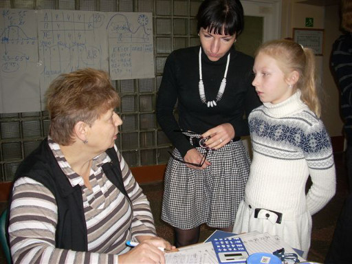
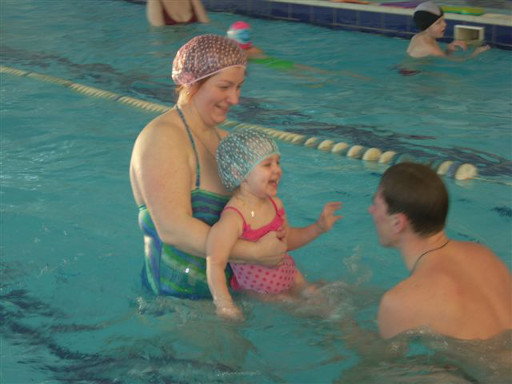

Unser Projekt
Diabetes-Kinder in Belarus
Mit ihren Spenden unterstützt der Verein Belarus Diabetes die Schulungen der Eltern von Kindern mit Diabetes in Belarus (Weissrussland). Eine lange Zusammenarbeit besteht mit der Stiftung „Freude den Kindern“ in Minsk, die sich seit der Gründung für die Gesundheit der „Tschernobyl-Kinder“ einsetzt. Wir pflegen langjährige Kontakte zu den Mitarbeiterinnen der Stiftung Minsk.
Alltag wird leichter
Die Stiftung „Freude den Kindern“ aus Minsk organisiert für Diabetes-Kinder und deren Eltern Schulungen, damit sie die Insulineinstellung und den Umgang mit ihrer Erkrankung besser bewältigen können. Die Schulungen werden jährlich mehrmals, je nach finanziellen Möglichkeiten, in einem Sanatorium in Belarus, durchgeführt. Der Verein unterstützt die Schulungen für Mütter mit Kinder (bis ca. 10 jährig). Die Projektleiterin wird von einer Ärztin und einer Krankenschwester unterstützt. Sie zeigen den Eltern und Kindern, wie sie mit Diabetes ein normales Leben führen können. Dazwischen freuen sie sich an Spiel und Sport.

Ludmila bespricht mit der Mutter die Insulinmengen

Spass im Schwimmbad
Eltern verzweifelt
Die Eltern der Kinder können die notwendigen Messgeräte aus finanziellen Gründen nicht kaufen. Die Insulineinstellung ist daher ungenau. Sie kennen die Blutzuckerwerte nicht und spritzen eine vom Arzt vorgegebene Menge Insulin. Bei dieser Behandlungsart ist die Ernährung und die körperliche Bewegung nicht einbezogen. Das kann zu körperlichen Schäden führen. Viele Eltern fühlen sich überfordert und sind dankbar, wenn sie eine gute Schulung besuchen können.
Ein Herz für die Diabetes-Kinder
Die Leiterin der Diabetes-Schulung, Ludmila Maruschkewitsch, ist selber Diabetikerin und hat den Umgang mit dieser Krankheit in Deutschland erlernt. Sie kennt die Schwierigkeiten aus eigener Erfahrung und gibt ihr Wissen mit viel Herzblut an Kinder und Eltern weiter.
Verwendung der Spenden
Ihre Spenden verwenden wir für Messgeräte, Messstreifen, Aufenthalt und Verpflegung im Sanatorium und eine kleine Entschädigung für die Leiterin und die Betreuerinnen.
Unterstützen Sie mit einer Spende die Diabetes-Kinder in Belarus und helfen Sie mit, diesen Kindern ein besseres Leben zu ermöglichen.
In unserem Flyer finden Sie eine Zusammenfassung der Informationen, die Sie auch gerne weiterverteilen dürfen.